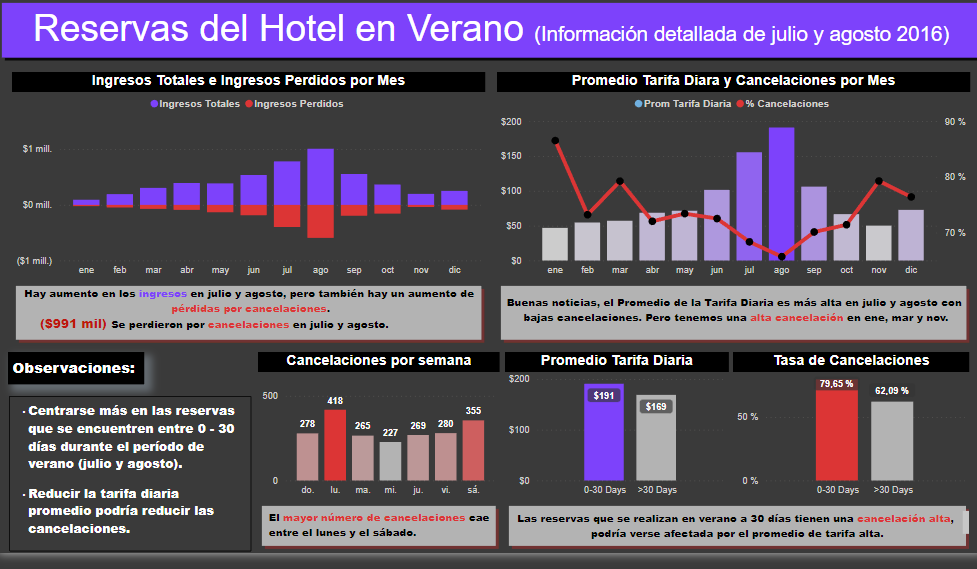

En este proyecto realice un análisis de las ventas de videojuegos desde el año 1980 al 2020 de 4 regiones del mundo y de 31 consolas diferentes.
Obteniendo como resultados: Los 10 juegos más vendidos, los 10 juegos más vendidos de todas y cada una de las consolas, el juego más vendido por genero y consola, entre otros resultados.


En este proyecto se realizó un análisis de los atletas que han participado en los juegos olímpicos desde que han participado desde 1896 al 2016.
El cual se pudo identificar: Dónde han ganado medalla cada uno de los países, cuál ha sido el atleta mas joven en ganar una medalla por cada uno de los países, cuáles han sido los atletas con mas medallas, entre otros resultados.

En este proyecto en Excel se hizo un análisis de los distintos jugadores que han ganado algún premio en los mundiales de la FIFA, segmentándolos por país y premios obtenidos.

En este proyecto realice un análisis de los resultados obtenidos de un hotel resort en la temporada de verano en el año 2016.
En este proyecto analice: Las tarifas, tasa de cancelaciones y los ingresos durante esta temporada. Para posteriormente realizar unas observaciones y mejoras para el hotel en esta temporada.